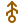

Übersicht
Alle USB-Sticks auf einen Blick
KI-Agent aktiv
Dateisystem beschädigt (RAW / „muss formatiert werden“)
Sicherheit 91 % · Datenrettung 90 % · reparierbar
✓Erkennen
✓Diagnose
3Retten
4Reparieren
USB-Geräte
3
Interne Laufwerke werden nie angezeigt
KI-Modell
83 % Treffer
819 Trainingsbeispiele
Gelernte Fälle
12
9 Reparaturen erfolgreich
USB-Geräte
Abbild öffnenNeu erkennen

Intenso Speed LineBereit
Untersuchen090C:1000 · 64.0 GB · Laufwerk E:
Controller: Silicon Motion · SMI SM32xx/SM3257
USB DISK 2.0Kein Medium
Untersuchen346D:5678 · –
Controller: No-Name · unbekannt (oft Fake 'Disk 2.0')
Unbekanntes USB-Gerät (Gerätebeschreibung fehlgeschlagen)Nicht erkannt
Untersuchen0000:0002 · –
Code 43: Gerät hat Fehler gemeldet (USB-Beschreibung fehlgeschlagen)
91 %sicher
Befund Intenso Speed Line · 090C:1000
Dateisystem beschädigt (RAW / „muss formatiert werden“)
Bootsektor oder Verwaltungsdaten des Dateisystems sind zerstört – meist nach Abziehen ohne Auswerfen oder Stromausfall.
Stimmt der Befund? Deine Antwort trainiert die KI.
Ja, stimmtNein
Neu untersuchenZur Reparatur
Datenrettung
90 %
Sehr gut – Sicherungskopie des Bootsektors ist intakt
Reparierbar
Ja
Bootsektor aus der Sicherung wiederherstellen (rückgängig machbar).
Rettungsabbild
Noch keins
Vor Schreibzugriffen empfohlen
Hypothesen der KIJede Annahme mit ihren Belegen
Dateisystem beschädigt (RAW / „muss formatiert werden“)91 %
- Partition ohne gültiges Dateisystem (RAW) (+60 %)
- Bootsektor zerstört, Sicherungskopie intakt (+60 %)
- Trainiertes Modell erkennt das Fehlerbild (99 %) (+45 %)
- Protokolle melden Dateisystemfehler (+30 %)
Defekte Speicherbereiche18 %
- Ereignisanzeige: fehlerhafte Blöcke gemeldet (+23 %)
Trainiertes ModellErkennt bekannte Fehlerbilder am Gesamtmuster
Dateisystem defekt99 %
Partitionstabelle defekt1 %
Messwerte
Controller: Silicon Motion · SMI SM32xx/SM3257
Gemeldete Größe: 64.0 GB
Schreibschutzbit des Controllers: nicht gesetzt
Lese-Probe: 26/26 lesbar, Ø 3 ms, max. 11 ms, 38.2 MB/s
Gefunden: FAT32 bei 1.0 MB (64.0 GB) – nur Sicherung intakt
Automatisch reparieren
Die KI arbeitet den Plan ab, fragt vor jedem Schreibzugriff und prüft nach jedem Schritt selbst, ob es besser geworden ist.
Plan der KIErst sichern, dann von harmlos nach riskant. Was bei ähnlichen Sticks geholfen hat, kommt zuerst.
1
Rettungsabbild erstellennur lesend
AusführenSichert alles Lesbare, bevor irgendetwas verändert wird
2
Dateien retten (Dateiliste, auch gelöschte)nur lesendErfahrung: 2 von 2 erfolgreich
AusführenKopiert Dateien mit Namen und Ordnern
3
Signatursuche (Fotos, Videos, Dokumente)nur lesend
AusführenFindet Dateien auch ohne Dateisystem
4
Bootsektor aus Sicherung wiederherstellenschreibt Verwaltungsdaten (rückgängig machbar)Erfahrung: 1 von 1 erfolgreich
AusführenSchreibt 1–12 Sektoren, Original wird gesichert
Optionen
☐ Stick enthält keine wichtigen Daten
Dateisystem: exfat ▾
Einzelne Werkzeuge
OberflächentestKapazitätstestSchreibtestUSB-Gerät neu startenSchreibschutz entfernenBootsektor wiederherstellenPartitionstabelle neuNeuflash-AnleitungAuf echte Größe einrichtenFormatieren FAT32Formatieren exFAT
Automatische Reparatur läuftSchritt 3 von 5 · läuft seit 4:12 min · Intenso Speed Line
58 %
AbbrechenJetzt: Signatursuche – 412 Dateien gefunden (jpg 318, mp4 41, pdf 22, docx 31) · 1,2 GB · bei 47,6 von 64,0 GB
✓Rettungsabbild64,0 GB gesichert
✓Dateien retten1.284 Dateien
3Signatursuche74 %
4Bootsektor wiederherstellenfragt vorher nach
5Prüfen & lernenwartet
AlleMessungHypotheseEntscheidungAktionPrüfungLernenWarnung
Leeren